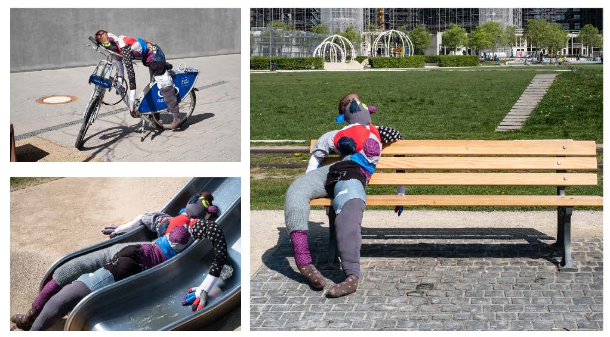
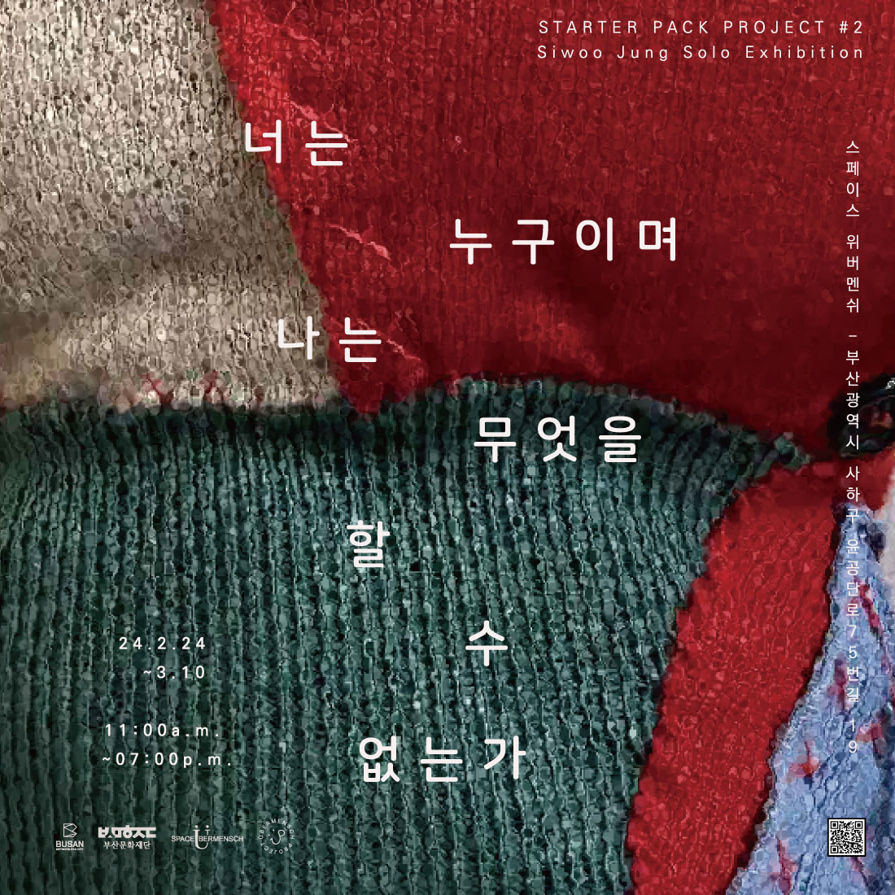
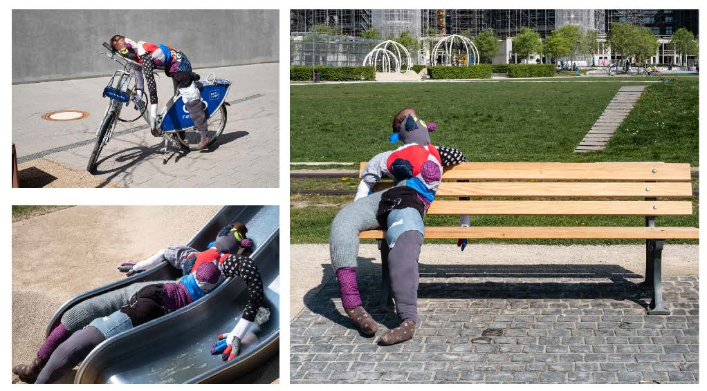
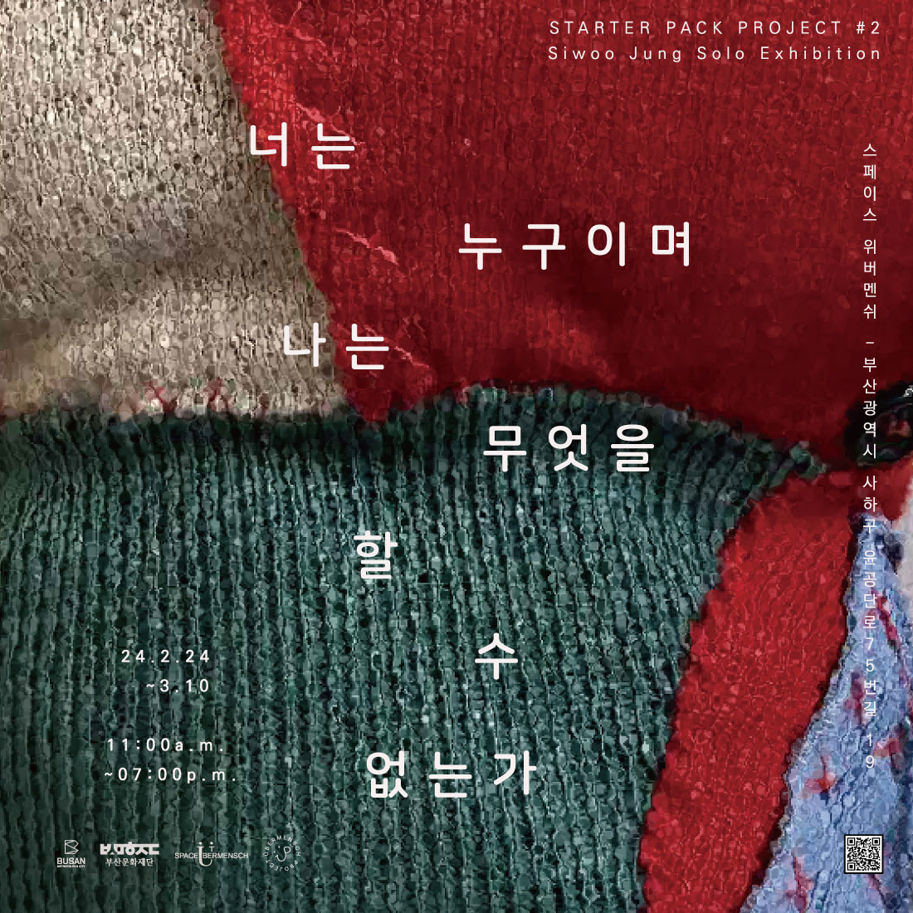

스타터팩 프로젝트 #2_너는 누구이며 나는 무엇을 할 수 없는가
장소: 스페이스 위버멘쉬
작가/주관: 정시우
후원: 부산문화재단
기획: 오윤영
촬영: 임봉호
대중 매체에서는 매년 올해의 컬러, 패션 트렌드 등의 단어가 쏟아져 나온다. 어떤 방식으로 자신을 드러내고 마케팅할 것인지는 개인에게 중요하게 작용한다. 옷의 색채와 소재, 장신구와 같이 자신의 취향이나 성향을 드러낼 수 있는 요소를 선택하여 착용한다. 이와 마찬가지로 타인의 외형은 대상을 매 순간 정지된 상태에서 읽어내고자 하는 욕망에 기인한다. 즉, 옷이란 사회와 문화 전반에 퍼져있는 기호를 공유하는 것이며 타자에게 보여지는 것을 전제에 둔 것이라 할 수 있다.
그렇다면 개인의 선택은 진정 자신의 자유에 의한 것일까? 상황에 맞는 옷이란 다수가 정의한 사회적 억압의 도구가 아닐까? 정시우 작가는 2021년부터 사회가 개인에게 가하는 폭력에 의문을 제기하는 작업을 옷이라는 소재를 통해 지속하고 있다. 옷은 정체성을 드러내는 것이자 다른 사람의 시선을 통해 자신을 완성하고자 하는 욕망과 맞닿아 있다. 작가는 독일에서 누군가가 입었던 옷을 기증받아 인형을 제작했고 이는 해체되어 부산에서 재조립되었다. 한 땀마다 가해지는 바늘의 뾰족한 폭력은 X 모양의 상흔을 남기며 천을 옥죄고 결합해 형상을 만든다. 하나의 인형은 각각 한 사람의 옷으로 만들어진 것으로 연령과 젠더는 물론이며 어떤 부위에 착용하던 것인지조차 알 수 없다.
전시장 외부의 투명한 유리문은 인형들을 쇼윈도 속 오브제처럼 바라볼 수 있게 기능한다. 내부에서는 인체 크기로 제작된 인형들이 관람자와의 만남을 통해 옷의 주인을 추측하는 놀이 형식으로 작동한다. 작가는 주체와 타자의 개념을 뒤흔들며 너는 그리고 나는 누구인지에 대해 질문한다.